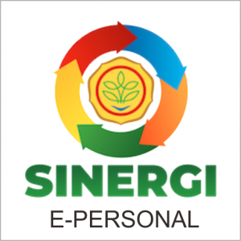
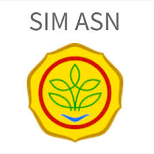
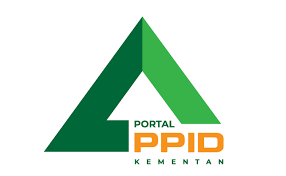
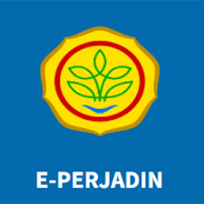
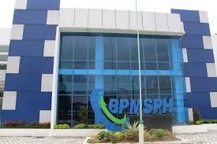

SMI BPMSPH
Beranda
Lapor
Pedoman dan Prosedur SMI
Pedoman SMI
Prosedur SMI
Formulir SMI
IKK
Agenda Sosialisasi PK
Audit Internal
Audit Eksternal
Kebijakan & Sasaran
Kebijakan
Sasaran
Pedoman Prosedur & Formulir
Struktur
Eviden
Eviden 45001
Eviden 9001
Eviden 37001
Manual SNI ISO
Web
WEBSITE, APLIKASI PENUNJANG DAN LINK EKSTERNAL
View
BPMSPH
(Balai Pengujian Mutu dan Sertifikasi Produk Hewan)
View
HALLO BPMSPH
(Balai Pengujian Mutu dan Sertifikasi Produk Hewan)
View
SPILL-B
(Sistem Pelayanan dan Informasi bagi Lembaga-Lembaga Mitra BPMSPH)

View
E-KINERJA

View
SIM-ASN
(Sistem Informasi Manajemen Aparatur Sipil Negara)

View
PPID Kementan
(Pejabat Pengelola Informasi dan Dokumentasi Kementrian Pertanian)

View
E-PERJADIN
(Elektronik-Perjalanan Dinas)
View
IVLAB
(Indonesian Veteriner Labs Information System)

View
Pemetaan Pengguna Jasa BPMSPH
View
Sosial Media & Chat BPMSPH